This document explains the multi-application build system used in the signals platform. The build process handles compilation and artifact consolidation for multiple React frontend applications and the backend server. For information about Docker containerization and deployment, see Docker Configuration.
The signals platform uses a multi-application build architecture where each frontend application is built independently using Vite, and then all build artifacts are consolidated into a single deployment-ready structure.
Build Architecture Diagram 
The build process consists of three main phases: root project build, individual app builds, and artifact consolidation.
The platform-specific build scripts (scripts/win/build.bat:1-4, scripts/linux/build.sh:1-4) first execute:
npm install - Install root project dependenciesnpm run build - Build the backend server and shared componentsBoth build scripts iterate through all directories in the apps/ folder and execute the same commands for each application:
Windows Build Loop
for /d %%D in (*) do (
cd "%%D"
npm install
npm run build
cd ..
)
Linux Build Loop
for D in `find . -maxdepth 1 -not -path "." -not -path "./.*" -type d`
do
cd $D
npm install
npm run build
cd ..
done
The copy-build.ts script consolidates all build artifacts into a unified deployment structure:
Artifact Consolidation Flow 
The createCopy function (scripts/copy-build.ts:16-33) handles the consolidation logic:
fs.mkdirSync with recursive optionbuild/ directories from each app using fs.cpSyncpackage.json and types.d.ts files using fs.copyFileSyncglobSync to discover all app directories dynamicallyEach frontend application uses Vite as the build tool with shared configuration patterns but application-specific customizations.
All applications share these core configuration elements:
| Configuration | Purpose | Implementation |
|---|---|---|
| React Plugin | React/JSX compilation | @vitejs/plugin-react-swc |
| Node Polyfills | Browser compatibility | vite-plugin-node-polyfills |
| Environment Variables | Runtime configuration | vite-plugin-environment with CC_ prefix |
| Full Reload | Development hot reload | vite-plugin-full-reload |
| Barrel Imports | MUI optimization | vite-plugin-barrel |
| Million.js | React performance | million/compiler |
The build configuration (apps/chat-app/vite.config.mts:46-51) specifies:
chrome87 for modern browser supportbuild (consistent across all apps)terser for production optimizationassetsInlineLimit: 0 prevents asset inliningEach app configures development server proxies differently:
Chat App Proxy Configuration
proxy: {
"/session": {
target: "http://localhost:30050",
changeOrigin: true,
ws: true,
},
}
Signal App Proxy Configuration
proxy: {
"/status": {
target: "http://localhost:30050",
changeOrigin: true,
},
}
The base configuration differs per application:
base: "chat" (apps/chat-app/vite.config.mts:66)base: "signal" (apps/signal-app/vite.config.mts:65)The consolidated build output follows this directory structure:
build/
├── apps/
│ ├── chat-app/
│ │ ├── build/ # Vite build output
│ │ ├── package.json # App dependencies
│ │ └── types.d.ts # TypeScript definitions
│ ├── signal-app/
│ ├── wallet-app/
│ ├── news-app/
│ └── strategy-app/
├── public/ # Static assets
├── package.json # Root dependencies
├── ecosystem.config.js # PM2 configuration
└── index.mjs # Backend server entry point
The build process includes PM2 configuration for production deployment via ecosystem.config.js:
PM2 Application Configuration 
The readConfig function (config/ecosystem.config.js:6-11) uses dotenv.parse to load environment variables from .env file if it exists, falling back to process.env.
The complete build process follows this sequence:
apps/ directorycopy-build.ts to create unified deployment structurebuild/ directory contains all necessary files for PM2 deploymentThe build system is designed to be platform-agnostic and supports both development and production builds through the same unified process.